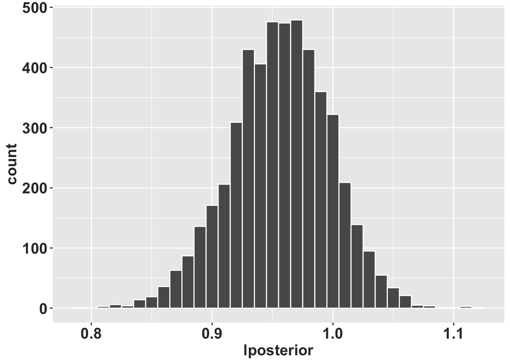
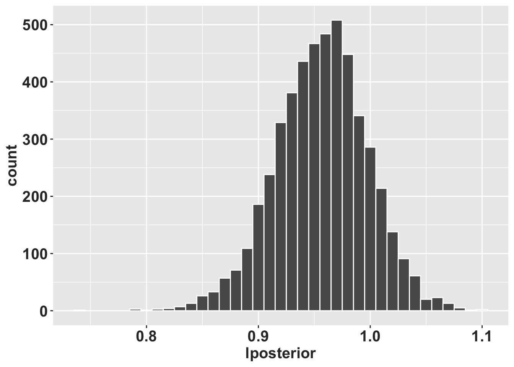

Chapter 8 Método bayesiano de calcular las transciones
Por: RLT
El objetivo de este capítulo es demostrar algunos de los retos cuando uno trabaja con especies raras o con poca información para estimar los parametros de la matrices y como se puede resolver y estimar parametros más realista.
Considera este primer ejemplo donde se estima que la especie de interes tenga tres etapas en su ciclo de vida (semillas, plantulas y adultos) y que solamente la etapa más grande (de adultez) puede producir semillas.
Cuando se comienza un analisis de dinamica poblacional el primer paso es evaluar y tratar de ver cual son las etapas del ciclo de vida que pudiesen ser representativo de la dinamica principal de la especie.
En esta primera figura vemos lo que se considerá que ocurre en esa especie hipotetica.
Ahora ud recoge los datos del campo y evalua las transiciones y fecundidad y tiene información siguiente.
- Todas las semilla germinan y crece a la etapa de plantula.
- Es realista que todas las semillas germinan?
- Por que no se encontró semillas que NO germinan?
- Todos las plantulas mueren
- Es realista que todas las plantulas se muere?
Aqui se ve dos de los problemas que resulta en PPM que no son realista, uno que no hay ninguna mortantad o que todo se muere. El otro componente es el efecto del tamaño de muestra, considerá que su especie de interes Ud tuvo acceso solamente a 4 plantas adultas (un especies rara), y 4 de los 4 sobrevieron, por consecuencia 100% de supervivencia. Si los individuos llegan a esta etapa son inmortales!!!? Claramente es un resultado del tamaño de muestra y no del ciclo de vida de la especie.
El paquete raretrans ayuda en resolver estos asuntos illogicos y crear matrices que son más entre realistas al ciclo de vida de su especie.
# hidden code to produce figures
library(DiagrammeR)
matA <- rbind(
c(0.0, 0.0, 0.0),
c(1.0, 0.0, 0.0),
c(0.0, 0.0, 0.9)
)
stages <- c("semillas", "plantulas", "adultos")
title <- NULL8.1 El paquete “raretrans”
La información original del uso del paquete se encuentra aqui https://doi.org/10.1016/j.ecolmodel.2021.109526.
Population projections from holey matrices: Using prior information to estimate rare transition events
Abstracto
Las matrices de proyección de población son un medio común para predecir la persistencia de la población a corto y largo plazo para especies raras, amenazadas y en peligro de extinción. Los datos de tales especies pueden sufrir de tamaños de muestra pequeños y, en consecuencia, perder eventos demográficos raros que dan como resultado trayectorias de ciclo de vida incompletas o biológicamente poco realistas. Las matrices con valores faltantes (ceros; p. ej., sin observación de semillas que se transforman en plántulas) a menudo se reparan utilizando información previa de la literatura, otras poblaciones, períodos de tiempo, otras especies, estimaciones de las mejores conjeturas o, a veces, incluso se ignoran. Para paliar este problema, proponemos usar un modelo multinomial de Dirichlet para parametrizar transiciones y un Gamma para la reproducción para parchear los valores faltantes en estas matrices perforadas. Esto integra formalmente la información previa dentro de un marco bayesiano e incluye explícitamente el peso de la información previa en las distribuciones posteriores. Mostramos utilizando dos conjuntos de datos reales que el peso asignado a la información anterior influye principalmente en la dispersión de los posteriores, la inclusión de anteriores da como resultado matrices irreducibles y ergódicas, y se pueden hacer inferencias biológicamente más realistas sobre las probabilidades de transición. Debido a que los antecedentes se establecen explícitamente, los resultados son reproducibles y se pueden volver a evaluar si hay antecedentes alternativos disponibles en el futuro.
8.3 Instalación de raretrans #2
#library(devtools)
#devtools::install_github("atyre2/raretrans", build = TRUE, build_opts = c("--no-resave-data", "--no-manual"))
library(raretrans)Vea el siguiente website para más información en ingles, la información que sigue es una traducción y ampliación de la información en el siuiente enlace.
https://atyre2.github.io/raretrans/articles/onepopperiod.html
library(tidyverse)
library(ggplot2)
library(popbio) # para la función projection.matrix()
library(raretrans)
# Mi tema de ggplot2 personal
rlt_theme <- theme(axis.title.y = element_text(colour="grey20",size=15,face="bold"),
axis.text.x = element_text(colour="grey20",size=15, face="bold"),
axis.text.y = element_text(colour="grey20",size=15,face="bold"),
axis.title.x = element_text(colour="grey20",size=15,face="bold"))El objetivo de esta viñeta es demostrar el uso del paquete raretrans
para los calculos de los parametros en una población y periodo de
transición.
8.4 Parte I: Obtención de la matriz de proyección
raretrans asume que la matriz de proyección es una lista de dos
matrices, una matriz de transición y una matriz de fertilidad. Este es
el formato de salida de popbio::projection.matrix. Si tenemos
transiciones individuales en un marco de datos
Podemos utilizar popbio::projection.matrix para obtener los datos
necesarios. Hacemos una demostración con los datos de transición y
fertilidad de la orquídea epifita Lepanthes elto POPNUM 250 en el
periodo 5.
8.5 Paso 1: Cargar y fusionar los datos de población única para L. elto
data("L_elto") # carga el conjunto de datos `L_elto` en memoria (incluido en el paquete `raretrans`)
head(L_elto) ## # A tibble: 6 × 13
## POPNUM year seedlings adults fertility IND_NUM stage next_stage first_year
## <dbl> <dbl> <dbl> <dbl> <dbl> <dbl> <chr> <chr> <dbl>
## 1 209 1 1 6 0 67 j j 1
## 2 209 1 1 6 0 68 a a 1
## 3 209 1 1 6 0 69 a a 1
## 4 209 1 1 6 0 70 a a 1
## 5 209 1 1 6 0 71 j a 1
## 6 209 1 1 6 0 72 a a 1
## # ℹ 4 more variables: last_year <dbl>, recruited <lgl>, died <dbl>,
## # lifespan <int>8.6 Organización de los datos en el “data.frame”
- el primer paso es seleccionar los datos de una población y un periodo de tiempo
- el segundo paso es hacer un cambio en la terminología para el estado más pequeño de “plantula” a “seedling”… Ese cambio es para que la información presentada aqui sea la misma que en el documento en ingles.
Cada fila de este data.frame de datos tiene columnas para la fase actual (stage), la fase siguiente (next_stage) y la fertilidad por individuo. Tenga en cuenta que “p” significa “plantula” en español. El primer conjunto de líneas de abajo cambia el nombre de la etapa del ciclo vital de “p” a “s” después de seleccionar la población y el periodo de tiempo.
onepop <- L_elto %>%
# Filtrar la población # 250, el periodo (año=year) 5
filter(POPNUM == 250, year == 5) %>%
# redefine "p" por plantula a "s" para seedling
mutate(stage = case_when(stage == "p" ~ "s",
TRUE ~ stage),
next_stage = case_when(next_stage == "p"~ "s",
TRUE ~ next_stage))
# popbio::projection.matrix no funciona con tibbles, por consecuencia se convierte en data.frame
head(onepop)## # A tibble: 6 × 13
## POPNUM year seedlings adults fertility IND_NUM stage next_stage first_year
## <dbl> <dbl> <dbl> <dbl> <dbl> <dbl> <chr> <chr> <dbl>
## 1 250 5 8 34 0 167 j a 1
## 2 250 5 8 34 0 168 j a 1
## 3 250 5 8 34 0 169 j a 1
## 4 250 5 8 34 0.118 170 a a 1
## 5 250 5 8 34 0 172 j j 1
## 6 250 5 8 34 0 173 j a 1
## # ℹ 4 more variables: last_year <dbl>, recruited <lgl>, died <dbl>,
## # lifespan <int># Crear TF = TRUE, añadir para formatear corectamente.
TF <- popbio::projection.matrix(as.data.frame(onepop),
stage = stage, fate = next_stage,
fertility="fertility", sort=c("s","j","a"), TF = TRUE)
TF # Este es la estructura de etapas de vida para esa población ## $T
##
## s j a
## s 0.09090909 0.00000000 0.00000000
## j 0.63636364 0.57446809 0.00000000
## a 0.00000000 0.29787234 0.85294118
##
## $F
##
## s j a
## s 0.0000000 0.0000000 0.1176471
## j 0.0000000 0.0000000 0.0000000
## a 0.0000000 0.0000000 0.00000008.7 Nota:
Nuestros estadios se codifican ahora como s (plántula), j
(juvenil) y a (adulto), y ahora tenemos dos matrices: T
(transición de estadios) y F (fecundidad). La tasa de crecimiento
asintótico de la población observada es \(\lambda =\)
0.93. Las transiciones raras que
faltan en nuestra primera matriz de transición, TF$T, son la
transición de plántula (s) a adulto (a) y la transición de j a
s. Pero sabemos que ocurren.
8.8 Paso 2: Obtener el número inicial de individuos por etapa
Dado que nuestras priores se basan en recuentos (número de individuos, N) y el tamaño de muestreo equivalente a priori se expresa como múltiplo del número de individuos observados, necesitamos obtener el número de individuos en cada etapa (\(N\)) en el primer periodo de tiempo.
Utilizamos la función raretrans::get_state_vector() para obtener el
recuento inicial de individuos, N. inicial, N.
N <- get_state_vector(onepop, stage = stage, sort=c("s","j","a"))
N # Un vector de # de individuos iniciales para cada etapa, nota que el "stage" son los individuos en el primer muestreo## [1] 11 47 34La lista de matrices y el vector de cuento de individuales no tienen por qué proceder de un data.frame como hemos hecho aquí. Mientras tengan el formato esperado, pueden crearse a mano. Usamos la población 231 en el periodo 2 como ejemplo, dividiendo la matriz en matrices de transición T y fecundidad F. Abajo, m significa “muerte”, es decir, plantas que están muertas.
## $Tmat
## stage
## fate p j a
## p 0.5000000 0.0000000 0.0000000
## j 0.0000000 0.8333333 0.0000000
## a 0.0000000 0.0625000 0.8750000
##
## $Fmat
## [,1] [,2] [,3]
## [1,] 0 0 0.125
## [2,] 0 0 0.000
## [3,] 0 0 0.000## p j a
## 2 6 16En esta matriz falta la transición de plántula a juvenil, y ninguno de los 6 juveniles murió, lo que lleva a una sobreestimación de la supervivencia. La tasa de crecimiento asintótico de la población observada es \(\lambda =\) 0.88. La matriz no es ergódica (no se puede llegar a cualquier otro estado desde uno o más estados), y reducible, lo que significa que una o más columnas y filas se pueden descartar y tienen las mismas propiedades eigen.
8.9 Parte 2: Uso de priors para incorporar transiciones raras
8.9.1 Use priors no informativos
- Ese paso es solamente para entender porque no se calcula y porque no se usa prior uniforme.
Tremblay (Tremblay et al. (2021)) muestran que los valores de prior de una dirichlet funciona para las columnas de la matriz de transición (T) y que valores prior gamma funciona para las columnas de la matriz de transición (F).
8.9.2 Matriz de transición
Por lo tanto, vamos a añadir un dirichlet uniforme con prior con un peso = \(1\) a la matriz de transición, \(T\). Aquí, tenemos 4 destinos (3 + muerte), por lo que cada destino 0,25 a la matriz de destinos observados (¡no a la matriz de transiciones!). de transición). Cuando especificamos una matriz con un prior para las transiciones, hay una fila más que columnas. Esta fila extra representa la muerte.
Tprior <- matrix(0.25, byrow = TRUE, ncol = 3, nrow=4)
fill_transitions(TF, N, P = Tprior) # resultado de la matriz de transición básica## [,1] [,2] [,3]
## [1,] 0.10416667 0.005208333 0.007142857
## [2,] 0.60416667 0.567708333 0.007142857
## [3,] 0.02083333 0.296875000 0.835714286## $T
##
## s j a
## s 0.09090909 0.00000000 0.00000000
## j 0.63636364 0.57446809 0.00000000
## a 0.00000000 0.29787234 0.85294118
##
## $F
##
## s j a
## s 0.0000000 0.0000000 0.1176471
## j 0.0000000 0.0000000 0.0000000
## a 0.0000000 0.0000000 0.00000008.9.3 Como calcular a mano!
Podemos obtener el mismo resultado ‘a mano’ - necesitamos el vector de observaciones porque la posterior se calcula a partir de las observaciones de transiciones, no la matriz de transiciones.
Tobs <- sweep(TF$T, 2, N, "*") # obtener las observaciones de transiciones
Tobs <- rbind(Tobs, N - colSums(Tobs)) # añadir la fila de muerte
Tobs <- Tobs + 0.25 # añadir los prior
sweep(Tobs, 2, colSums(Tobs), "/")[-4,] # dividir por la suma de la column y descarta la fila de muerte ## s j a
## s 0.10416667 0.005208333 0.007142857
## j 0.60416667 0.567708333 0.007142857
## a 0.02083333 0.296875000 0.835714286El prior uniforme rellena las transiciones que faltan, pero también crea problemas porque proporciona valores de transición que son biológicamente imposibles. Por ejemplo, proporciona una transición para adulto->plántula, cuando esta transición sólo es posible en la matriz de fecundidad \(F\). Por esta razón, no recomendamos el uso de priores uniformes. En otra palabra usando un prior uniforme no toma en cuenta el ciclo de vida de una especie.
8.9.4 Matriz de fecundidad
Debemos especificar los parámetros para la fertilidad a priori como
una matriz. Las etapas que no hay reproducción o sea que no se producen
por reproducción deben ser NA, usando NA_real_. El concepto de
NA_real_ es que es un valor que no esta presente pero con puntos
decimales. Nota que el valor de prior de la fertilidad es 0.0001.
alpha <- matrix(c(NA_real_, NA_real_, 1e-5,
NA_real_, NA_real_, NA_real_,
NA_real_, NA_real_, NA_real_), nrow=3, ncol = 3, byrow = TRUE)
beta <- matrix(c(NA_real_, NA_real_, 1e-5,
NA_real_, NA_real_, NA_real_,
NA_real_, NA_real_, NA_real_), nrow=3, ncol = 3, byrow = TRUE)
fill_fertility(TF, N, alpha = alpha, beta = beta)##
## s j a
## s 0.0000000 0.0000000 0.1176473
## j 0.0000000 0.0000000 0.0000000
## a 0.0000000 0.0000000 0.0000000El cambio en la fertilidad es < 0,0001 en comparación con el valor observado.
8.9.5 Calculando los Priors de fertilidad a mano
8.9.5.1 Calculando a mano, alfa a priori es el número de crías observadas
y beta a priori es el número de adultos observados.
obs_offspring <- N[3]*TF$F[1,3]
prior_alpha <- 1e-05
prior_beta <- 1e-05
posterior_alpha <- obs_offspring + prior_alpha
posterior_beta <- N[3] + prior_beta
posterior_alpha / posterior_beta # expected value## [1] 0.1176473Esto demuestra por qué la estimación puntual posterior de la fecundidad no cambia mucho; los valores no informativos de \(\alpha\) y \(\beta\) apenas cambian los valores observados.
Ahora podemos juntarlos.
unif <- list(T = fill_transitions(TF, N),
F = fill_fertility(TF, N,
alpha = alpha,
beta = beta))
unif## $T
## [,1] [,2] [,3]
## [1,] 0.10416667 0.005208333 0.007142857
## [2,] 0.60416667 0.567708333 0.007142857
## [3,] 0.02083333 0.296875000 0.835714286
##
## $F
##
## s j a
## s 0.0000000 0.0000000 0.1176473
## j 0.0000000 0.0000000 0.0000000
## a 0.0000000 0.0000000 0.00000008.10 El crecimiento poblacional
La tasa de crecimiento asintótico de la población es ahora \(\lambda =\) 0.92. La tasa de crecimiento se reduce ligeramente porque la aplicación de la prioridad uniforme a las probabilidades de transición hace que las transiciones observadas de crecimiento y supervivencia se reduzcan ligeramente en relación con las transiciones no observadas de crecimiento y supervivencia.
8.10.1 Otras opciones para el argumento `returnType
Por defecto, fill_transitions() devuelve la matriz de transición \(T\),
y fill_fertility() devuelve la matriz de fertilidad \(F\). Existen otros
tres otros valores que puede tomar el argumento returnType:
fill_transitions(... returnType = "TN")puede devolver una matriz aumentada de destinos, que es útil para la simulación. La cuarta fila de este resultado (véase más adelante) es el estado de mortalidad.
## [,1] [,2] [,3]
## [1,] 1.25 0.25 0.25
## [2,] 7.25 27.25 0.25
## [3,] 0.25 14.25 29.25
## [4,] 3.25 6.25 5.25fill_fertility(... returnType = "ab")devuelve los vectores alfa y beta de los vectores posteriores.
## $alpha
##
## s j a
## s 4.00001
## j
## a
##
## $beta
## [,1] [,2] [,3]
## [1,] NA NA 34.00001
## [2,] NA NA NA
## [3,] NA NA NA- Ambas funciones también pueden devolver la matriz completa, la suma de \(T\) y \(F\).
##
## s j a
## s 0.104166667 0.005208333 0.124789916
## j 0.604166667 0.567708333 0.007142857
## a 0.020833333 0.296875000 0.8357142868.11 Añadiendo realidad a los análisis
Hasta este punto, el objetivo era de entender las funciones y su aplicaciones. Ahora vamos a añadir realidad a los analisis. Como se ha mencionado no deberiamos usar priors uniforme. Debemos usar priors que son más relevante al ciclo de vida de la especie de interes.
8.11.1 Incorporar priores informativos
Para solucionar el problema de la creación de transiciones imposibles, especificamos una prioridad más informativa obtenida de un experto en orquídeas epifitas (RLT). La información tiene que tener la misma forma que la matriz de transiciones con una fila más que columnas. Esa ultima fila representa los individuos que se mueren de la estapa correspondiente.
RLT_Tprior <- matrix(c(0.25, 0.025, 0.0,
0.05, 0.9, 0.025,
0.01, 0.025, 0.95,
0.69, 0.05, 0.025),
byrow = TRUE, nrow = 4, ncol = 3)Nota la matriz tiene la 1ª fila, 3ª columna es 0,0, porque esta transición es imposible. Esta prioridad se construye de manera que las columnas suman 1, lo que crea la mayor flexibilidad para la ponderación de la prioridad. Por defecto, la suma es 1, interpretado como un tamaño de muestra a priori de 1.
## [,1] [,2] [,3]
## [1,] 0.1041666667 0.0005208333 0.0000000000
## [2,] 0.5875000000 0.5812500000 0.0007142857
## [3,] 0.0008333333 0.2921875000 0.8557142857We can specify the weight as a multiple of the sample size for each stage.
## [,1] [,2] [,3]
## [1,] 0.143939394 0.008333333 0.000000000
## [2,] 0.440909091 0.682978723 0.008333333
## [3,] 0.003333333 0.206914894 0.885294118En este caso, la prioridad se pondera con la mitad del número observado de transiciones. En este caso, con sólo 2 transiciones, el tamaño efectivo de la muestra a priori sigue siendo 1. Si el número de transiciones observadas fuera Si el número de transiciones observadas fuera mayor, una ponderación a priori de 0,5N sería mayor que 1, pero permitiría que los datos dominen.
8.12 Part 3: Obtain Credible Intervals
8.12.1 Obtener los inertvalos de confianza (IC) para entradas de matriz individuales
La distribución posterior marginal de un elemento en un multinomio es una distribución beta, y usamos esto para obtener intervalos creíbles en nuestro tasas de transición. Podemos usar el tipo de retorno TN para obtener los parámetros de el multinomio deseado.
TN <- fill_transitions(TF, N, P = RLT_Tprior, priorweight = 0.5, returnType = "TN")
a <- TN[,1] # cambie 1 a 2, 3 etc para obter la distribución beta marginal de cada columna.
b <- sum(TN[,1]) - TN[,1]# cambie 1 a 2, 3 etc para obter la distribución beta marginal de cada columna.
p <- a / (a + b)
lcl <- qbeta(0.025, a, b)
ucl <- qbeta(0.975, a, b)
knitr::kable(sprintf("%.3f (%.3f, %.3f)", p, lcl, ucl))| x |
|---|
| 0.144 (0.025, 0.343) |
| 0.441 (0.218, 0.677) |
| 0.003 (0.000, 0.038) |
| 0.412 (0.195, 0.649) |
Esas son las estimaciones puntuales (comparar con la primera columna anterior), inferior
y superior \(95\%\) de los intervalos creíbles simétricos para transiciones de la
etapa de plántula. Existe un alto grado de incertidumbre debido a la
tamaño de muestra pequeño (\(2\)) y bajo peso en el anterior (\(1\)), lo que lleva a
un tamaño de muestra efectivo de 3. Si aumentamos el tamaño de muestra efectivo
a \(20\) especificando: priorweight\(= 9 (9*2 = 18 + 2 = 20)\) el
los intervalos creíbles simétricos se reducen bastante:
La importancia aqui es que el tamaño de muestra tiene un impacto sobre la confianza que se tiene sobre el estimado de punto (el promedio) de las transiciones y permanencia y mortandad.

La tasa de transición de plántula a juvenil se reduce cuando el tamaño de la muestra es demasiado grande. En general, el tamaño de la muestra previa debe ser menos que el tamaño de muestra observado.
8.13 Intervalos creíbles de \(\lambda\)
Obteniendo intervalos creíbles sobre la tasa de crecimiento asintótica, \(\lambda\), requiere simular matrices a partir de las distribuciones posteriores. Esto es algo complicado de hacer correctamente, y hemos escrito una función raretrans::sim_transitions() para generar una lista de matrices simuladas dada la matriz observada y especificaciones previas.
## [[1]]
## [,1] [,2] [,3]
## [1,] 0.199834160 0.0004088639 0.606481040
## [2,] 0.583185517 0.7470013130 0.004662277
## [3,] 0.002227043 0.1317413305 0.889993929Ahora simulamos 5000 veces, calculamos el valor \(\lambda\) de cada matriz y creamos un histograma de la distribución.
#set.seed(8390278) # make this part reproducible
alpha2 <- matrix(c(NA_real_, NA_real_, 0.025,
NA_real_, NA_real_, NA_real_,
NA_real_, NA_real_, NA_real_), nrow=3, ncol = 3, byrow = TRUE)
beta2 <- matrix(c(NA_real_, NA_real_, 1,
NA_real_, NA_real_, NA_real_,
NA_real_, NA_real_, NA_real_), nrow=3, ncol = 3, byrow = TRUE)
# generar 5000 matrices basado en las previas de transciones y de fertilidades, el tamaño de muestra, en adición de los datos
RLT_0.5 <- sim_transitions(TF, N, P = RLT_Tprior, alpha = alpha2, beta = beta2,
priorweight = 0.5, samples = 5000)
# extract the lambdas for each matrix
RLT_0.5 <- tibble(lposterior = map_dbl(RLT_0.5, lambda)) # convertir la lista en un tibble
ggplot(data = RLT_0.5,
mapping = aes(x = lposterior)) +
geom_histogram(binwidth = 0.01, colour="white") +
rlt_theme
8.14 Detemrinar si el \(\lambda\) es significativamente diferente de 1
También podemos calcular algunas estadísticas de resumen. pincrease es el
probabilidad de que \(\lambda > 1\).
RLT_0.5_summary <- summarize(RLT_0.5,
medianL = median(lposterior),
meanL = mean(lposterior),
lcl = quantile(lposterior, probs = 0.025),
ucl = quantile(lposterior, probs = 0.975),
pincrease = sum(lposterior > 1.)/n())
knitr::kable(RLT_0.5_summary, digits = 2)| medianL | meanL | lcl | ucl | pincrease |
|---|---|---|---|---|
| 0.96 | 0.96 | 0.87 | 1.03 | 0.14 |